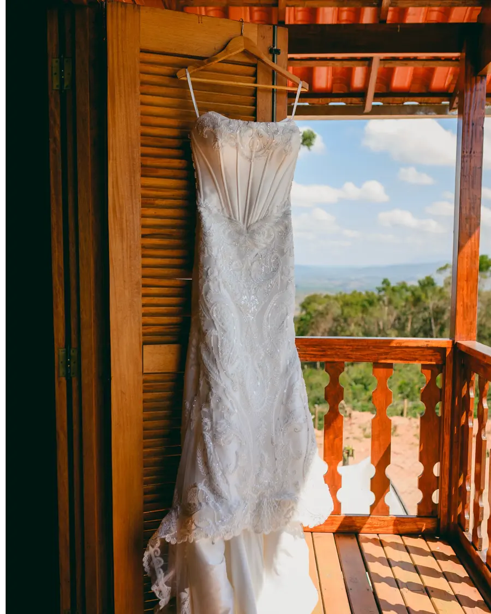

01 · O making of
A noiva se arruma dentro do chalé.
Parede de madeira, luz de janela, escada de degraus largos e uma varanda com a serra ao fundo. O vestido pendurado ali já vira foto antes de a noiva vestir.
Fotos: Vitor Estevão Fotografia